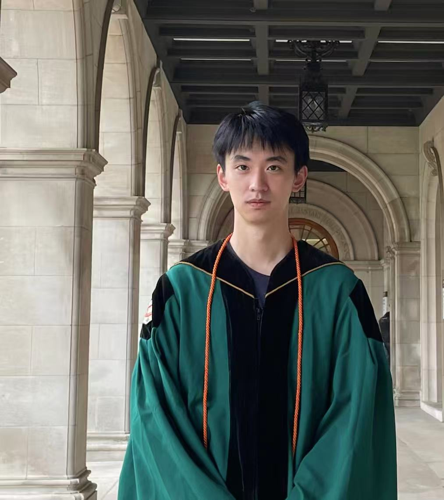

Zongzhe Xu
PhD Student, Computer Science
University of California, Los Angeles
Google Scholar / LinkedIn / CV
About
I am a first-year Computer Science PhD student at UCLA, working with Prof. Yuzhe Yang in the Health Intelligence Lab (HAIL). Before UCLA, I completed my M.S. in Machine Learning at Carnegie Mellon University, where I worked with Prof. Ameet Talwalkar and Prof. Mikhail Khodak in the Sage Lab. Earlier, I earned my B.S. in Computer Science and Mathematics (summa cum laude) at Washington University in St. Louis, where I did clinical research with Dr. Peinan Zhao at the OBGYN department of the WashU School of Medicine.
In industry, I spent time at Datadog as a Data Scientist Intern contributing to a time-series foundation model, and at DAMO Academy, Alibaba as a Research Intern on open-vocabulary perception.
What I Work On
I am broadly interested in building machine learning systems that can make sense of messy, real-world scientific and health data. My current work sits at the intersection of:
- Foundation models & pre-training
- Multimodal & time-series learning
- Machine learning for health
Concretely, I like working on problems where models have to cope with heterogeneity, limited supervision, and signals that look very different from text or natural images. I am always happy to chat about collaborations in these areas — feel free to reach out.
News
- [Apr. 2026] Homepage is up! Always looking for collaborations in AI for health.
- [2026] SleepLM: Natural-Language Intelligence for Human Sleep is on arXiv!
- [2026] OSF: On Pre-training and Scaling of Sleep Foundation Models is on arXiv!
- [Sep. 2025] Our work on time-series foundation models, TOTO / This Time is Different, accepted at NeurIPS 2025!
- [Aug. 2025] Started my PhD at UCLA in the HAIL Lab with Prof. Yuzhe Yang!
- [Jan. 2025] Joined Datadog as a Data Scientist Intern working on TOTO.
- [Jan. 2025] Specialized Foundation Models Struggle to Beat Supervised Baselines accepted at ICLR 2025!
- [Jan. 2025] V2X-DG: Domain Generalization for Vehicle-to-Everything Cooperative Perception accepted at ICRA 2025!
- [Dec. 2024] Graduated from CMU with an M.S. in Machine Learning.
Publications
A few recent works I am most excited about. See my Google Scholar for the complete list. (* indicates equal contribution.)

Experience
- Aug. 2025 – Present Graduate Student Researcher, HAIL Lab, UCLA (advisor: Prof. Yuzhe Yang)
- Jan. 2025 – Jul. 2025 Data Scientist Intern, Datadog, Inc.
- Sep. 2023 – Dec. 2024 Graduate Student Researcher, Sage Lab, Carnegie Mellon University (advisor: Prof. Ameet Talwalkar)
- Mar. 2024 – Nov. 2024 Research Assistant, Cleveland Vision & AI Lab, Cleveland State University (advisor: Prof. Hongkai Yu)
- Jun. 2023 – Jul. 2023 Research Intern, DAMO Academy, Alibaba / Sichuan Digital.
- Mar. 2021 – Apr. 2023 Part-time Clinical Researcher, OBGYN Department, Washington University School of Medicine (advisor: Dr. Peinan Zhao)
Education
- Aug. 2025 – Present Ph.D. in Computer Science, University of California, Los Angeles.
- Aug. 2023 – Dec. 2024 M.S. in Machine Learning, Carnegie Mellon University.
- Sep. 2019 – May 2023 B.S. in Computer Science & Mathematics (summa cum laude, minors in Bioinformatics and Biology), Washington University in St. Louis.
Teaching
- Teaching Assistant, CSE 412 Introduction to Artificial Intelligence, Washington University in St. Louis, Sep. 2021 – Jun. 2022.
- Teaching Assistant, CSE 417 Machine Learning Theory, Washington University in St. Louis, Sep. 2021 – Jun. 2022.
A Few Things About Me
Away from the keyboard, I have been falling deep into bouldering and climbing, and I am steadily working my way into more hiking and skiing. Long before I picked up a lab notebook, I played competitive badminton — I hold a National Second-Class Athlete certification in China. If you want to talk research, share a climbing gym recommendation, or rally a few points, drop me a line.